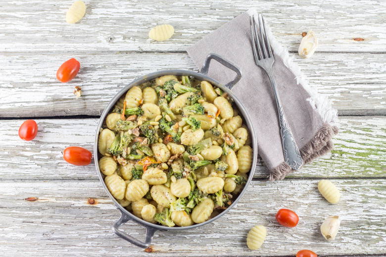
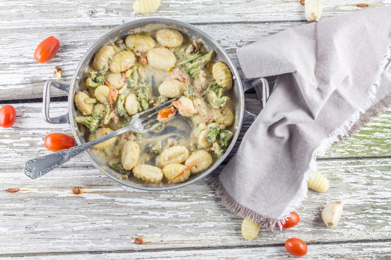

Gnocchis brocolis, noix et crème de parmesan

Dans cet article, je vous propose une recette gourmande: des gnocchis brocolis, du parmesan, des noix et quelques tomates cerises. Le brocoli j’adore ça! Mais seulement quand ce n’est pas l’aliment principal dans mon assiette, sinon ce n’est même pas la peine je n’en mangerai pas! C’est d’ailleurs bizarre car j’adore cuisiner ce légume et j’en ai d’ailleurs toujours dans mon congélateur quand ce n’est pas la saison. Que ce soit dans des smoothies, des tartes, des plats de pâtes j’aime en mettre partout. Mes gnocchis brocolis en sont la preuve vivante! Il fallait à tout prix que j’écrive cette recette car c’est de loin l’une de mes préférées (enfin, j’ai du mal à me décider car en réalité j’ai un tas de recettes préférées!!!!) Un peu de brocolis, de tomates cerises, quelques noix par ci par là et une délicieuse crème de parmesan, le tout arrosé d’un filet d’huile de noix comment résister franchement? Ah oui j’allais oublier il y aussi des pignons de pin! J’en mets un peu partout surtout avec des noix 🙂
Vous l’aurez compris si vous avez un peu parcouru mon blog, j’aime ce qui est fait maison avant tout mais ce n’est pas toujours possible de « tout » faire soi même surtout lorsque l’on bosse à temps plein et notamment lorsqu’il s’agit des faire des gnocchis! Vous pouvez d’ailleurs aller jeter un œil à ma recette de gnocchis maison ICI, vous comprendrez vite qu’en rentrant le soir ce n’est absolument pas possible (à moins d’avoir de supers horaires!!) alors dans ces cas là il faut se contenter de ceux trouvés au supermarché du coin.
Je vous laisse maintenant découvrir cette recette de gnocchis brocolis parmesan & co et j’espère qu’elle vous plaira autant qu’à moi (qu’à nous serait plus juste!!)
Ingrédients
- Gnocchis - 380g
- Crème liquide - 100ml
- Parmesan - 50g
- Brocolis - 250g
- Tomates cerises - une dizaine
- Ail - 1 gousse
- Noix - 1 poignée
- Huile de noix
- Sel poivre
- Huile d'olive
Instructions
- Détailler le brocoli en fleurettes
- Plongez les dans de l'eau bouillante salée pendant 1 minutes et sortez les à l'aide d'un écumoire
- Dans une poêle, versez la crème liquide, faites la chauffer
- Ajouter le parmesan et remuer
- Ajouter les brocolis, saler, poivrer
- Dans une petite poêle, faites revenir l'ail et les tomates cerises dans un peu d’huile d'olive
- Ajoutez-les à la crème de parmesan, rectifier l'assaisonnement selon vos goûts
- Faire bouillir une grande quantité d'eau salée et y cuire les gnocchis
- Une fois que les gnocchis sont cuits, verser la crème de parmesan dessus et ajouter des noix et des pignons de pin (vous pouvez faire griller les noix et les pignons de pins au préalable mais moi je préfère comme ça!)
- Servir les gnocchis dans une assiette et arroser d'un filet d'huile de noix


Les tips de la communauté
Gnocchis très gourmands avec crème de parmesan très appréciés. Recette réputée excellente pour faire manger du brocoli aux enfants qui ne l'aiment pas habituellement. Plusieurs testeurs confirment le succès enthousiaste.
Astuces
- Crème de parmesan très riche et délicieuse apporte beaucoup de goût
- Combinaison brocoli-noix-parmesan exceptionnelle
- Recette efficace pour faire apprécier le brocoli à ceux qui l'évitent
- Gnocchis faits maison donnent meilleur résultat
Variantes suggérées
- Lardons fumés peuvent être ajoutés pour version plus carnée
- Œufs au plat peuvent garnir pour version plus riche
Ajustements signalés
- que je tente les brocolis comme ca !
- que je la teste rapidement ! Surtout que pour les brocolis, je suis exactement comme toi XD Bon week-end Steph!